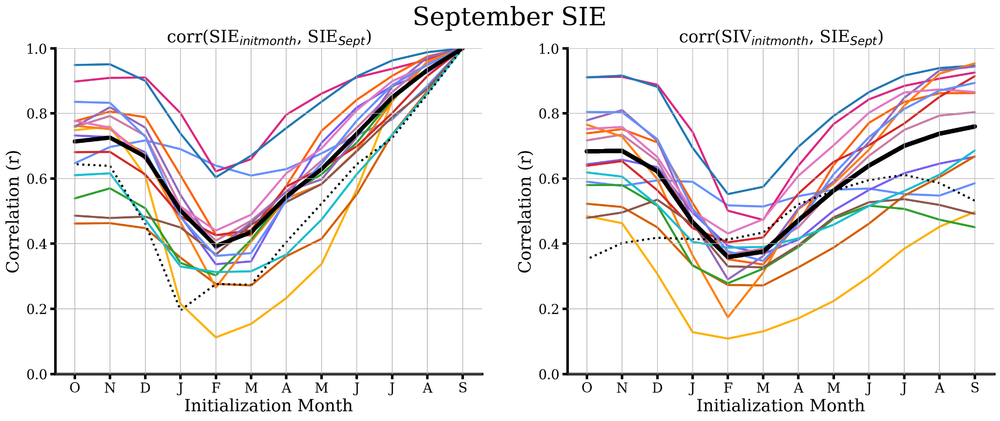

Antarctic Sea Ice Predictability
Overview
As a NOAA Ernest F. Hollings Scholar at GFDL, I examined seasonal-to-interannual Antarctic sea ice predictability in CMIP6 models under Dr. Mitchell BushukAbstract
Antarctic sea ice extent (SIE) exhibits large year-to-year variations which influence fisheries management, wildlife conservation, scientific expeditions, and tourism. These internal sea ice variations also potentially mask multi-decadal signals associated with climate change. For these reasons, there is a growing interest in the seasonal-to-interannual prediction of Antarctic sea ice. Here, we examine seasonal-to-interannual Antarctic SIE predictability in the Coupled Model Intercomparison Project Phase 6 (CMIP6) models. We find that CMIP6 models exhibit a winter to winter reemergence of SIE anomalies, in which winter SIE is positively correlated with the SIE of following winters, despite a loss of correlation during the intervening summer months. This multi-year persistence of SIE anomalies is robust across CMIP6 models. We also show that CMIP6 models generally exhibit a “spring predictability barrier” for Antarctic summer SIE predictions, as there is a large decrease in skill for predictions initialized prior to December. A majority of models exhibit a sea ice volume (SIV)-based spring predictability barrier, which contrasts with earlier prediction studies that showed skillful predictions initialized prior to springtime months. For summer SIE predictions, we find that SIV provides additional predictability beyond SIE. Our results give insight into how seasonal-to-interannual prediction of Antarctic sea ice can be understood and improved in order to better predict Antarctic sea ice variability under climate change.Results & findings
